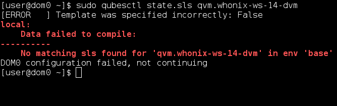
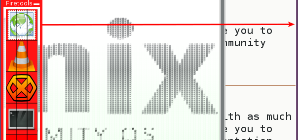
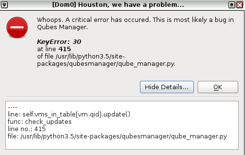

Let’s test the following recently build Whonix TemplateVM packages point release.
1 Like
working directly , old summary issue fixed.
Other issues needs to be addressed and fixed:
- following qubes installing document, this command no more needed?:
sudo qubesctl state.sls qvm.whonix-ws-14-dvm
as it will resutl:

- weird issue (might be dangerous):
steps to produce it:
 Clone whonix-14-gw/ws
Clone whonix-14-gw/ws
Disable network for the cloned and so as for the original templates
Delete the original templates
Install whonix templates again with salt
Network will adapt the same behavior of the previous (or cloned) templates leading to
{kind=link}
where it should be by default according to salt advantage to connect by default to sys-whonx.
- As i mentioned before , this is lost and no more there which needs to be added again (i think since we are using balanced memory usage)
{kind=link}
i’m am getting result as TNT for
sudo qubesctl state.sls qvm.whonix-ws-14-dvm
Fresh Qubes 4 install
removed old templates
sudo qubesctl state.sls qvm.whonix-ws-14-dvm
failed to compile…
1 Like
In Qubes R4 and above: Networking (NetVM) of TemplateVM (Whonix, Debian, Fedora, probably any) should be set to none is ok.
Reminder: In Qubes R4 and above the NetVM setting of TemplateVMs should be set to
None.Since TemplateVMs in Qubes R4 and above are supposed to be upgraded through qrexec based Qubes updates proxy.
sudo qubesctl state.sls qvm.whonix-ws-dvm
Fixed in wiki.
My debian-9 template also has no meminfo-writer. So not a Qubes-Whonix issue. Please report to Qubes.
1 Like
A post was split to a new topic: gwenview - apparmor=“DENIED” operation=“mknod” profile="/usr/bin/gwenview" name="/home/user/.local/share/user-places.xbel.tbcache.SL2784"
when you press on file -> open… -> it will shutdown immediately :
{kind=link}
Terminal Log:
user@host:~$ okular
trying to create local folder /home/user/.kde/share/apps: Permission denied
trying to create local folder /home/user/.kde/tmp-host: Permission denied
trying to create local folder /home/user/.kde/socket-host: Permission denied
kdeinit4: Aborting. bind() failed: No such file or directory
Could not bind to socket '/home/user/.kde/socket-host/kdeinit4__0'
trying to create local folder /home/user/.kde/share/kde4: Permission denied
okular(7818): No ksycoca4 database available!
okular(7818)/kdecore (trader) KServiceTypeTrader::defaultOffers: KServiceTypeTrader: serviceType "okular/Generator" not found
okular(7818)/kdecore (KConfigSkeleton) KCoreConfigSkeleton::writeConfig:
okular(7818)/kdecore (KConfigSkeleton) KCoreConfigSkeleton::writeConfig:
okular(7818)/kdecore (KConfigSkeleton) KCoreConfigSkeleton::writeConfig:
okular(7818)/kdecore (KConfigSkeleton) KCoreConfigSkeleton::writeConfig:
trying to create local folder /home/user/.kde/tmp-host: Permission denied
trying to create local folder /home/user/.kde/socket-host: Permission denied
kdeinit4: Aborting. bind() failed: No such file or directory
Could not bind to socket '/home/user/.kde/socket-host/kdeinit4__0'
trying to create local folder /home/user/.kde/share/kde4: Permission denied
okular(7818)/kdecore (KConfigSkeleton) KCoreConfigSkeleton::writeConfig:
trying to create local folder /home/user/.kde/tmp-host: Permission denied
trying to create local folder /home/user/.kde/socket-host: Permission denied
kdeinit4: Aborting. bind() failed: No such file or directory
Could not bind to socket '/home/user/.kde/socket-host/kdeinit4__0'
trying to create local folder /home/user/.kde/share/kde4: Permission denied
okular(7818): No ksycoca4 database available!
okular(7818)/kdecore (trader) KServiceTypeTrader::defaultOffers: KServiceTypeTrader: serviceType "KParts/ReadOnlyPart" not found
okular(7818): No ksycoca4 database available!
okular(7818)/kdecore (trader) KServiceTypeTrader::defaultOffers: KServiceTypeTrader: serviceType "KParts/ReadOnlyPart" not found
trying to create local folder /home/user/.kde/tmp-host: Permission denied
trying to create local folder /home/user/.kde/socket-host: Permission denied
kdeinit4: Aborting. bind() failed: No such file or directory
Could not bind to socket '/home/user/.kde/socket-host/kdeinit4__0'
trying to create local folder /home/user/.kde/share/kde4: Permission denied
okular(7818) fileModule: Failed to load configured file module "kfilemodule"
KCrash: Application 'okular' crashing...
KCrash: Attempting to start /usr/lib/kde4/libexec/drkonqi from kdeinit
KCrash: Connect sock_file=/home/user/.kde/socket-host/kdeinit4__0
Warning: connect() failed: : No such file or directory
KCrash: Attempting to start /usr/lib/kde4/libexec/drkonqi directly
KCrash failed to exec(), errno = 13
Unable to start Dr. Konqi
Not forwarding the crash to Apport.
user@host:~$
Note: apparmor profiles enabled/installed
make whonix-ws templates limited connection by default, not for the sake of the template itself but for the sake of the appvm which will be created from it.
as appvm based on whonix-ws-template it will come by default as limited outgoing internet once its created.
{kind=link}
done
1 Like
keyboard layouts confirmed that it doesnt work. even i restarted my entire pc.
if i open firetools , then move the border to the right it will copy what has been on/off on the main screen
e.g:
open firetools , slide it to the right then open/close tbb you will see the image copied itself there (so as any other software)
(only in testing version, not happened before)

Invalid.
As per the red notice, “has no networking”. Therefore nothing to limit.
This is a usability issue. Ideally QVMM woulnd’t show these two options in that case. Not sure worth a QVMM bug report against Qubes.
Creating standalone based on whonix-ws will lead to this issue:

which i think user should wait for Qubes Manager fixes.
Please check if this was reported to Qubes already.
Every QVMM bug has to be reported to Qubes.
New testers-only release required due to this bug.
1 Like
Please report to Qubes.
Done
Done
1 Like
https://github.com/QubesOS/qubes-issues/issues/4489#issuecomment-439682092
I guess I have to wait for qubes-gui-agent 4.0.19. Then a new Point Release for Qubes R4 Testers Wanted post will be created which can likely soon be followed by a Point Release for Qubes R4.